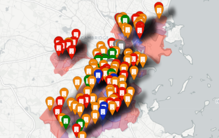
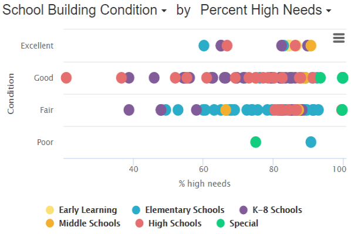

BuildBPS - Exploring Equity
This project allows you to explore BuildBPS data along with demographic data for the city and its schools.
Click below to view maps or charts of BuildBPS data.

View Maps

View Charts